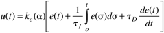
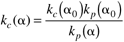
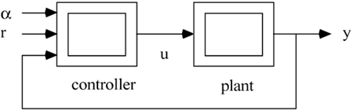
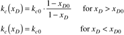

| [ Team LiB ] |
|
11.5 Controller Parameter (Gain) SchedulingPerhaps the most widely mentioned technique for controlling nonlinear processes is gain scheduling. Let a represent the scheduling variable, which will often be the measured output, y. A gain-scheduled PID controller is then represented by  Notice that the primary difference between this algorithm and the nonlinear PID controllers of the previous section is that a is a general scheduling variable, whereas the controllers in the previous section were based on error as the scheduling variable. Although all of the controller parameters can be scheduled, controller gain is commonly scheduled because processes are often characterized as a changing gain with relatively constant dynamics. Typically, the controller gain, kc, is varied to keep kckp constant, which then keeps the stability margin constant. If the process gain can be characterized as a function of the scheduling parameter, kp(a), then the controller gain can be scheduled as  where the subscript 0 indicates a nominal operating point. An important step in developing a gain-scheduled controller is determining the proper scheduling variable. Rules of thumb such as scheduling on a "slow variable" or using a variable that "captures the nonlinearities" are often used. It is most common, then, to schedule based on either the setpoint or measured output, since the process input (manipulated variable) will vary more rapidly than the output. When there are additional measurements, then a measured or inferred "auxiliary" variable can be used for scheduling. The four basic steps in developing a parameter-scheduled controller are as follows:
Note that steps 1 and 2 will often be combined by using some form of closed-loop tuning at discrete operating points. This is particularly true if the autotune feature of commercial controllers is used; the use of three operating points appears to be common. There are several different options for the scheduling of the controller parameters.
A major advantage of a parameter-scheduled controller is that linear control system design procedures can be used, and at least the local control system behavior can be understood. A problem can occur in steps three and four, where parameter scheduling is developed and implemented. If the dynamic effect of the scheduling variable is not included in the design process, then even the local linearized closed-loop behavior may not be predicted correctly. A general representation of a gain-scheduled controller is shown in Figure 11-15, where a represents the scheduling variable. The double lines on the process and controller blocks indicate that these are nonlinear. Figure 11-15. Parameter-scheduled control strategy. An example application of gain scheduling is distillation. Since the process gain is a function of the product composition, it makes sense to schedule the controller gain as a function of composition. This approach was taken by Tsogas and McAvoy (1985) in the control of distillation composition, with distillate flow rate as the manipulated variable. The scheduling algorithm used was  Notice that this is a "one-way" algorithm. Since the process gain increases with lower purity, maintaining a constant controller gain speeds up the response when the distillate is less pure. |
| [ Team LiB ] |
|